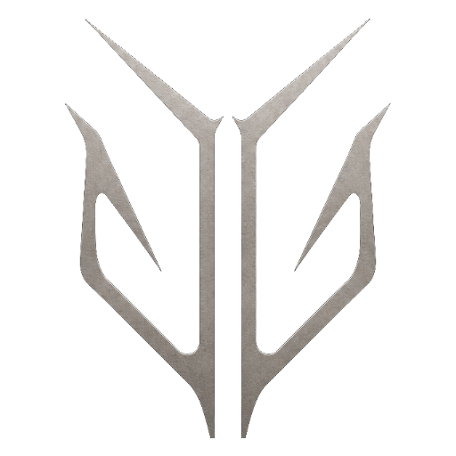
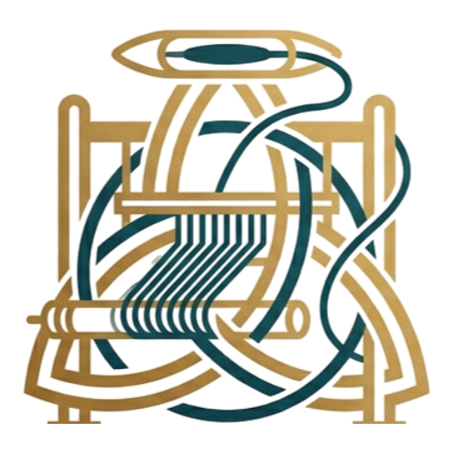

← Réseau Entité 05
Plateforme reliant créateurs, clients et usines textiles : création de patrons, production, suivi.
Remettre le fil entre les mains de celui qui dessine.
Entre un dessin et un vêtement produit, il manque toute la chaîne. Verdandi outille le passage : patronage, chiffrage, mise en production, suivi jusqu'à la livraison.
Bibliothèque de bases, gradation, personnalisation et export atelier.
Mise en relation usines, chiffrage, échantillonnage, suivi de série.
Identité, hébergement, sécurité et ressources partagées avec les autres entités du groupe.